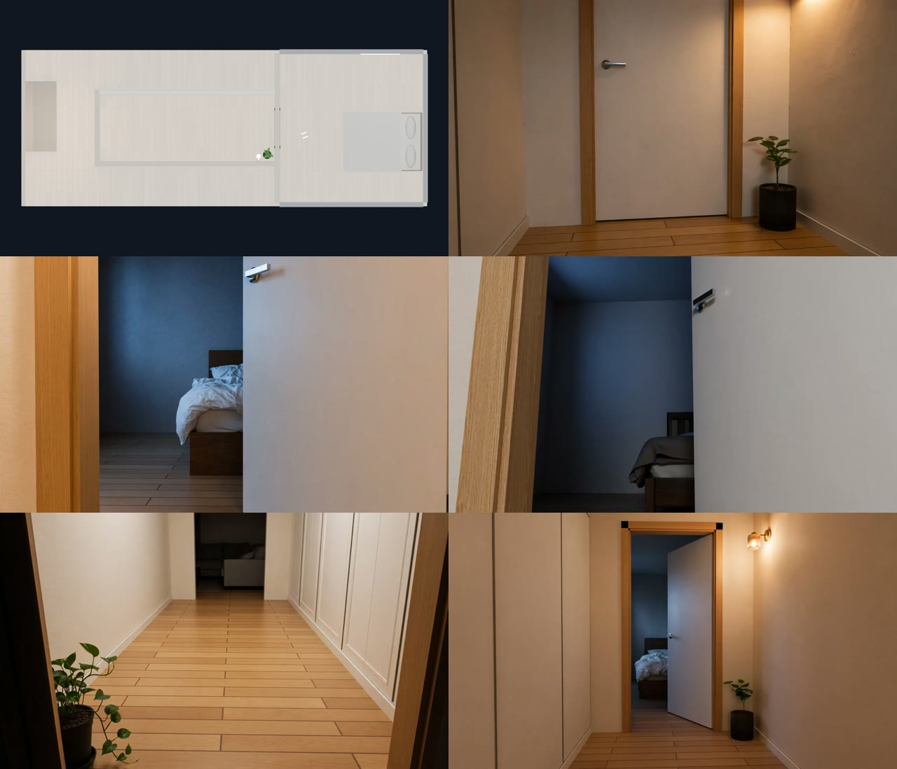

각방인데 왜 왔어? — 장소 정본 v5
보리랑 나비 · «꺼져.» 확정 · 미공개 시험작
v4 · 이전판
v5 · 문·소품 고친 판
v4 → v5 고친 것 (대표님 지적 두 가지)
- 1장면 문 — 아내가 문의 경첩 쪽을 잡고 있었고 «문을 당긴다»는 지시 때문에 문이 열렸다 닫혔습니다. 이제 아내 컷은 모두 같은 각도로 반쯤 열린 문, 아내는 문틈에 서서 문의 바깥 끝을 잡고, 문은 움직이지 않습니다. 문이 움직이는 건 마지막 «문 쾅» 한 컷뿐입니다.
- 소품 — 선풍기(안 돌던 것)와 침대 옆 스탠드를 배치도에서 지웠습니다. 남은 것은 침대·창·복도 벽등·화분 — 움직이지 않는 것만 둡니다. 효과음에서도 «선풍기 소리»를 뺐습니다(소리에 적으면 그려 넣습니다).
장소 정본 (평면도 + 카메라 자리 사진)
